“why didn’tyou sell?”
the clips
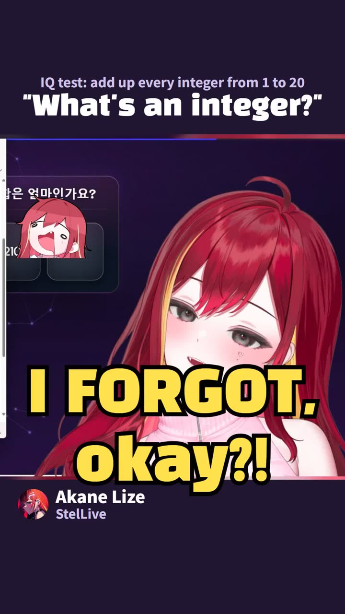
Every clip is one moment from a Korean VTuber’s stream, cut at the second her chat ran hottest. Yuni asking chat why they didn’t sell their stocks drew 2.5 times her usual chat pace.
Her own voice stays. You read English on screen, Korean and Japanese captions sit underneath, and every clip links back to the full stream.
just dropped
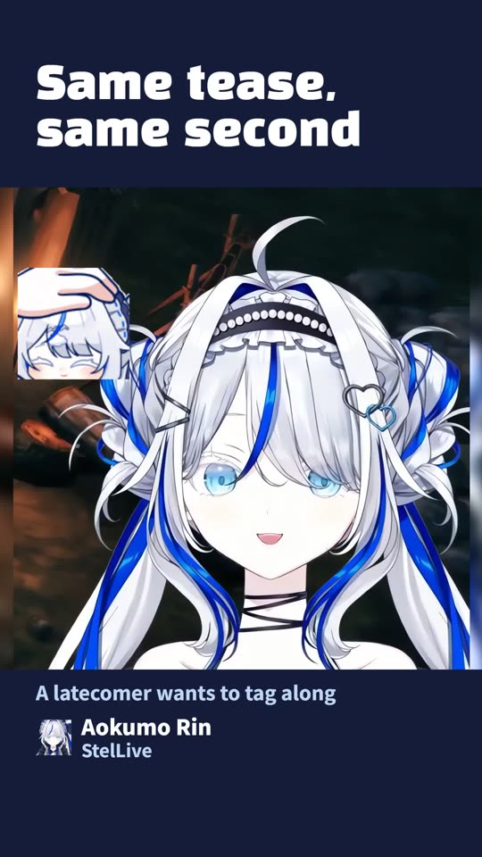
Aokumo RinKorean VTuber Aokumo Rin & Nana Tease a Valheim Latecomer in Unison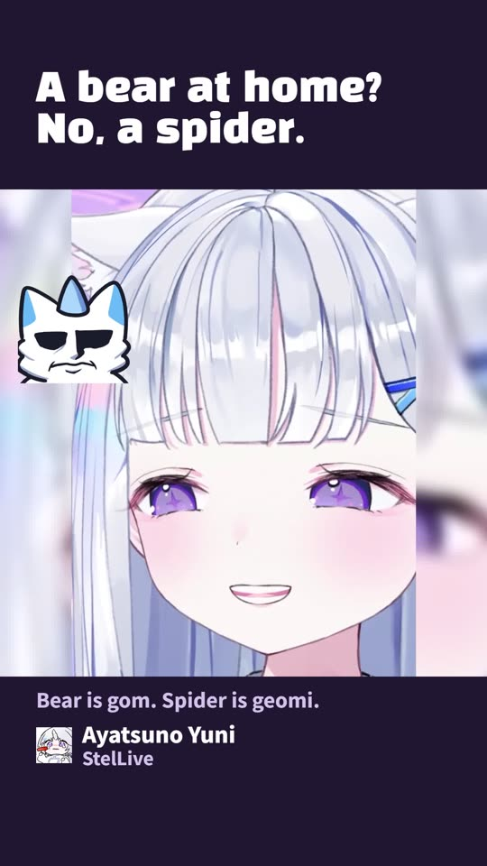
Ayatsuno YuniKorean VTuber Ayatsuno Yuni Finds a Spider at Home, Chat Hears 'Bear'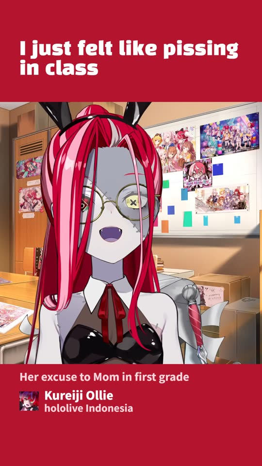
Kureiji OllieTells Her Mom She Just Felt Like Peeing in Class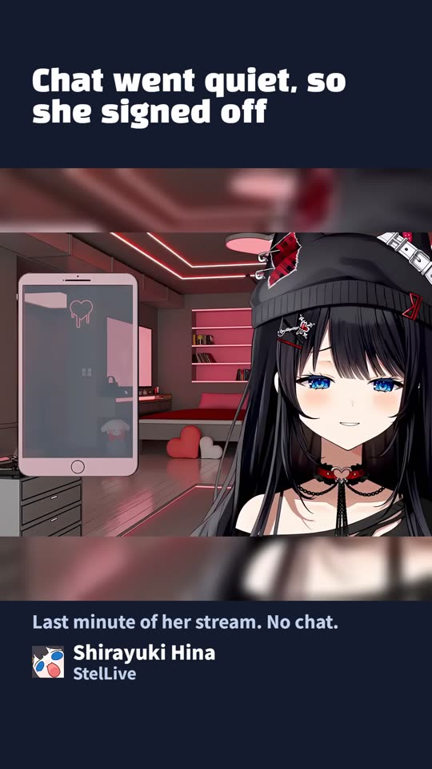
Shirayuki HinaKorean VTuber Shirayuki Hina Gets Lonely With No Chat and Signs Off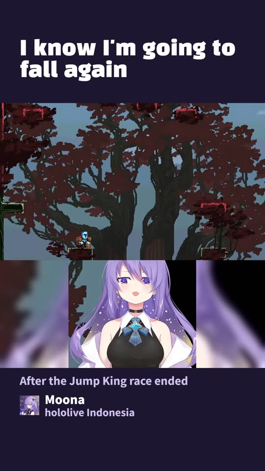
MoonaHoshinova Knew She'd Fall Again in Jump King, and She Did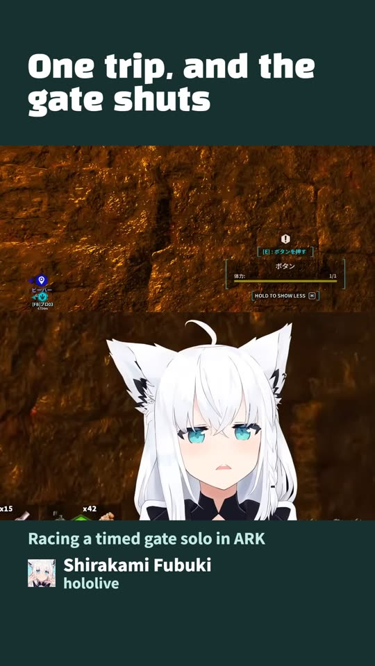
Shirakami FubukiTrips Once and the Gate Shuts in Her Face in ARK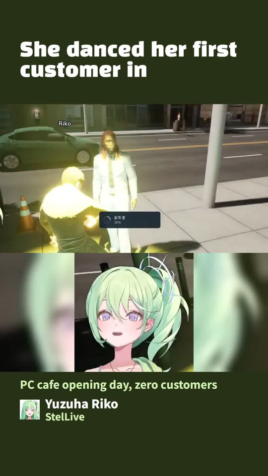
Yuzuha RikoKorean VTuber Yuzuha Riko Dances Her First Customer Into Her PC Caferoster
Who we clip right now. Open a name to see where she streams.
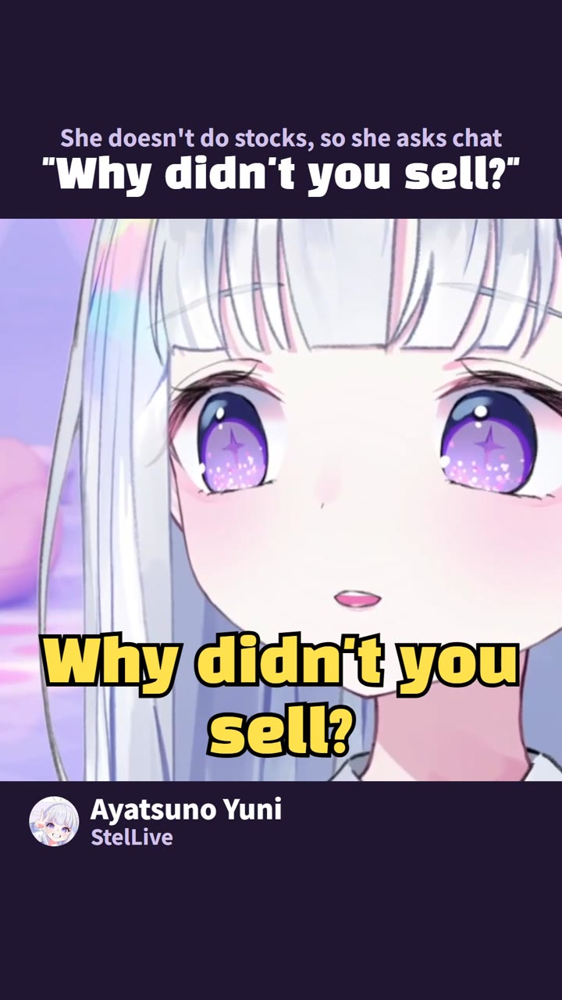
spike
We read the replay’s chat and keep the twenty seconds where it ran hottest.
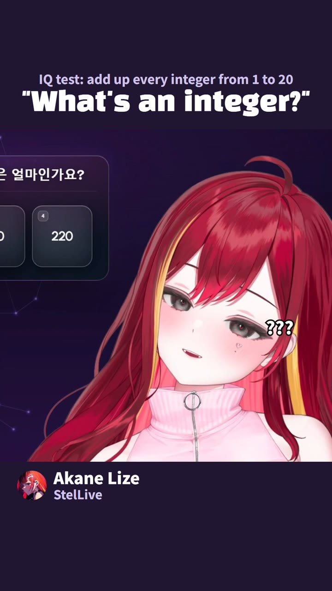
cut
Her voice and face stay. The silences go, and the clip stops on the line people repeat.
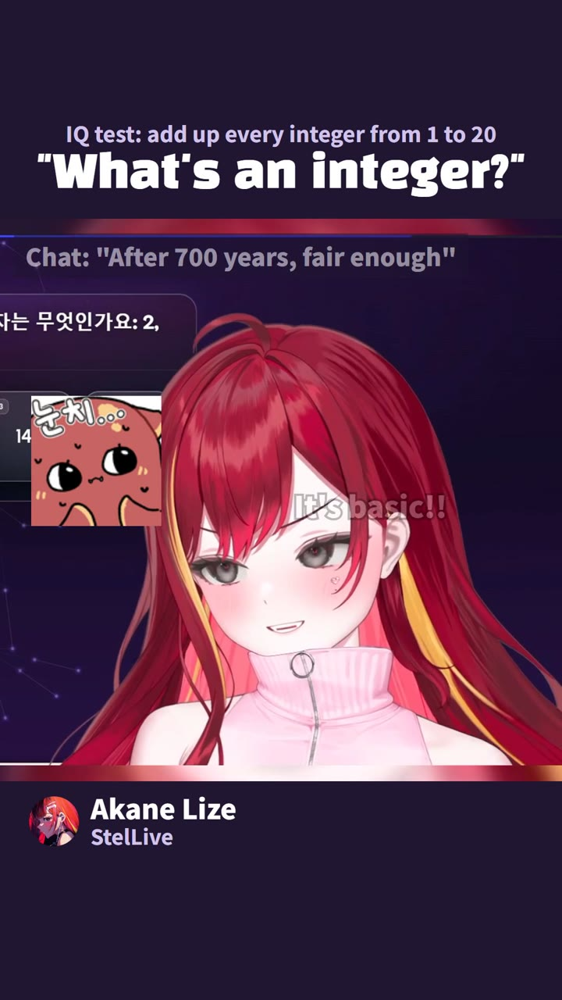
sub
English on screen. Korean and Japanese captions underneath. Her real chat, translated beside her.
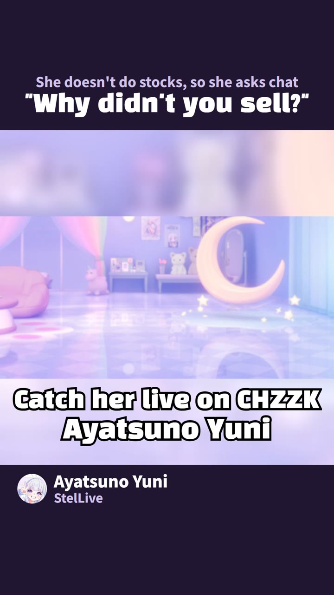
drop
Three clips a day, timed for evenings in the Americas, in Korea and Japan, and in Europe. 08:07, 20:07 and 00:37 Korea time.
fan-made, by the rules
GenieStudio is fan-made, run by a game developer who watches more Korean VTuber streams than is healthy. Most of the best moments never leave Korean-speaking chat, so we cut them down to thirty seconds and add English subtitles.
We only clip agencies whose derivative-work guidelines allow it, starting with StelLive on CHZZK, and we follow those rules. Clips go up after the original stream is public, songs and other people’s work stay out, and every description says the clip is fan-made and links to the full stream. Each VTuber keeps her own voice; the subtitles, notes and timing are ours. If a clip ever crosses a line for a streamer or her agency, we take it down.